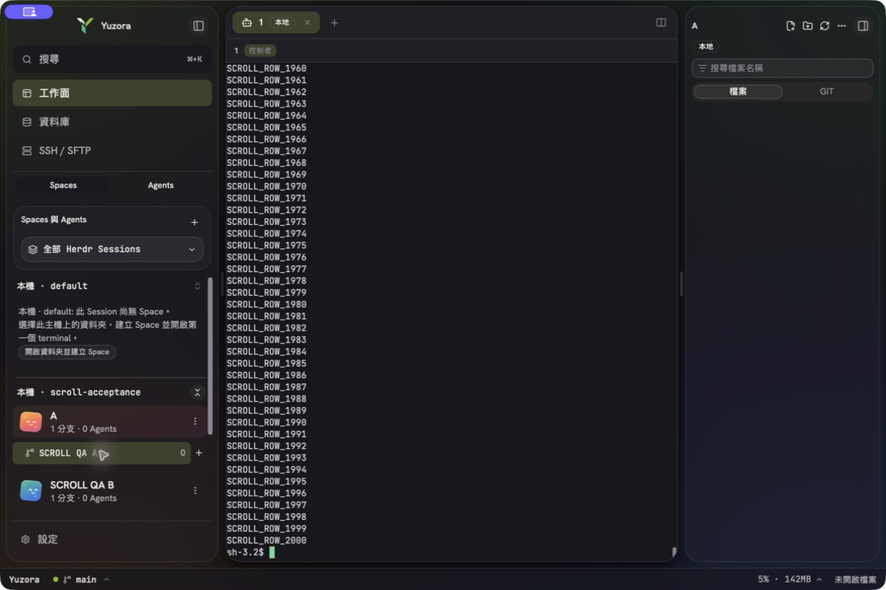
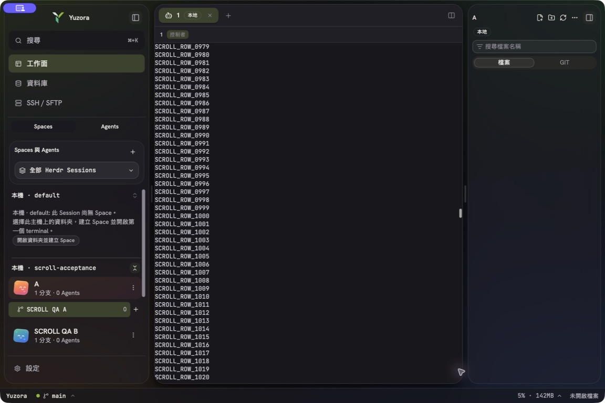
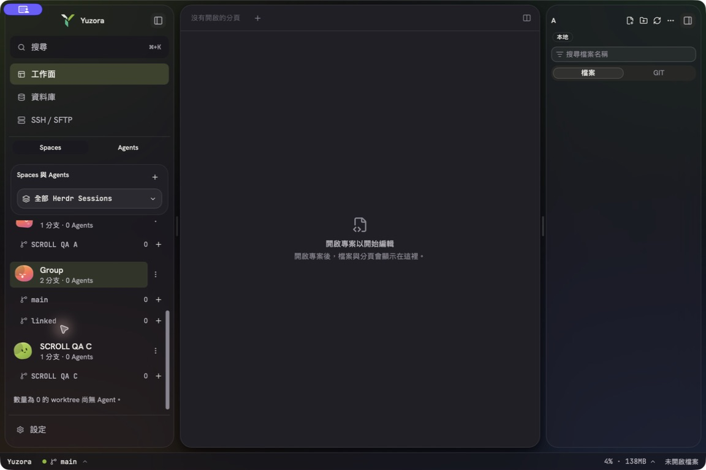

2026-09-14 · 候選分支 release/v0.0.14 · 比較基準 b1514de1fd0c3ce29a9b64dd03553661fa42d81d。本報告區分程式／協定測試與原生驗收，未宣告 WSL 修復已通過，也未發布正式版。
| 問題 | 修正與位置 | 證據 |
|---|---|---|
| 每手勢 dispatch，WSL 共用 Host admission 32 筆（含執行中），I/O 序列化，導致 host-request-limit。 | herdrScrollController.ts：每 pane 一筆 in-flight 加最新 pending，33ms 最小間隔、立即本地位置、750ms busy 退避預算。herdrScrollScheduler.ts / herdrProvider.ts：每 host 一筆已送出的 scroll read/write、FIFO、公平排程、32 筆等待上限、generation 與 AbortSignal。 | 修改前 200 次手勢產生 200 RPC 的回歸失敗；修改後相同測試 PASS。 |
| 舊 overflow／reconnect 回應可能倒退最新位置，unsupported probe 每秒重複。 | 獨立 generation/revision、最後回應校正範圍；永久拒絕只 probe 一次直到 reset；忙碌保留最新意圖，權限／斷線／未知 mutation timeout 不自動重播。保留 shadcn ScrollArea，錯誤原因有雙語說明。以 VITE_YUZORA_SCROLL_DIAGNOSTICS=1 建置時，可在 window.__yuzoraScrollDiagnostics.read() 取得診斷；ring 最多 512 筆，不記錄終端內容；next-frame 不是完成繪製的證明。 | busy、deadline、同步 throw、readonly、old response、range shrink/growth、取消與 reset 測試。 |
| source 到首次 move 才決定；row-only handler 丟失 gesture；legacy insert_index 重複扣除。 | SpaceAgentTree.tsx / herdrWorkspaceReorder.ts：pointerdown 固定來源與 host owner、window move/up/cancel、可見 session 範圍 hit-test、release 座標重算。legacy 傳原清單 boundary；只在明確 unsupported 且單一 workspace 時 fallback。 | 全視窗事件、不同 pointer、Escape、失敗不重送與 downward move 案例 PASS。macOS 原生 [w1,w2,w3] → [w2,w1,w3]。 |
| 群組只送一個 workspace；權威回傳被丟棄，五次 snapshot 補救。 | 公開 wire 欄位為 repo_key。同時保留 snapshot.worktree 與 worktree.list source 的官方群組識別，以 open_workspace_id 合併；group 整組 move_block、linked child 不單獨移動。Rust/TS 回傳 {workspaceIds}，store 保留 focus 並防 pre-drop snapshot 覆蓋；一次 reconciliation。 | 實機發現 0.9.0 snapshot 未帶 worktree，改由官方 inventory 補齊後重測 PASS：[w2,w1,w3,w4,w5] → [w2,w1,w4,w5,w3]。這是新增的實際回歸案例。 |
上游參考：HERDR 每 pane 合併與 33ms drag、正式版 public workspace schema、herdrm AppKit gesture。herdrm 的 AppKit 行為不能外推成 WSL WebView 驗證。
同一 Mac、同一 Bun、同一 200 手勢 fixture；scripts/benchmark-herdr-scroll.ts 載入基準／候選 production controller，以 40ms 序列 RPC 與 32 筆 admission 模型重現。這些是 client queue 模型數字，不是原生 frame 或 paint p95。
| 指標 | 基準 | 候選 |
|---|---|---|
| RPC 次數 | 200 | 24 |
| 峰值 admitted | 32 | 1 |
| host-request-limit | 146 | 0 |
| 最終 server offset／期望 200 | 194（FAIL） | 200（PASS） |
| 本地 handler p50／p95 | 0.0147／0.0449ms | 0.0058／0.0363ms |
| 最後手勢後收斂 | 3 秒仍未達目標 | 83.4ms |
基準數據 · 候選數據。原生 WebView paint 端到端 p50/p95、RDP 傳輸延遲隔離與長時間跨平台資源曲線：NOT RUN，不得用本模型宣稱全平台絲滑。
同一 Mac、同一專用 Session、80×24、各模式 50 次，使用基準及候選 release helper 的實際測量如下（dispatch 到下一個 terminal.frame，包含依賴差異，排除 WebView paint）：
| 路徑 | p50 前 → 後 | p95 前 → 後 |
|---|---|---|
| native terminal.scroll | 17.91 → 17.71ms | 25.34 → 18.84ms |
| pane.get + pane.scroll | 65.58 → 55.01ms | 79.04 → 58.03ms |
| pane.scroll | 29.59 → 27.84ms | 33.70 → 29.41ms |
原生 helper 基準樣本 · 候選樣本。單輪結果不能排除系統負載差異；主要可證明的改善仍為佇列上限與最後目標收斂。
| 環境／版本 | 方式與結果 | 限制 |
|---|---|---|
| macOS 26.6.2 (25G83), arm64；Yuzora 0.0.14 isolated release bundle；HERDR 0.9.0 protocol 22；Pi 已安裝 0.85.1 | PASS 原生 wheel、scrollbar thumb 中段 drag、輸入焦點、中文貼上指令執行、一般 Space 向下移動、group 整組移動、linked child 不獨立排序。bundle 經 codesign --verify --deep --strict。App 使用獨立 identifier 與測試 XDG roots。 | 中文貼上不是 IME 組字驗收。Pi 0.85.1 已原生啟動、辨識為待命、送出單一測試 prompt 並得到 YUZORA_PI_SCROLL_OK，回覆後 wheel 與焦點 PASS；provider 啟動 discovery 失敗及模型暫時過載亦有觀察到，未歸因 Yuzora。不是 signed updater 安裝／升級。 |
| macOS HERDR 0.8.2 protocol 20 | PASS 實際官方 binary checksum、隔離 server、schema、snapshot、events、observe/control/input/resize、legacy downward 與 block order。 | NOT RUN pane.scroll metadata：該正式 runtime 未提供 endpoint。WSL protocol 20 已知 connector 限制仍保留，不宣稱完整 scrollbar 能力。 |
| macOS HERDR 0.9.0 protocol 22（目前最新正式版） | PASS 同上，加真實 400 行歷史、pane.get/pane.scroll 返回正確 pane 和 offset。 | 版本庫查詢只找到 0.8.2、0.9.0 屬本次正式版本範圍；沒有宣稱未發布版本 PASS。GitHub HERDR compatibility run 34818292254 已在 macOS / Linux / Windows 全部 PASS（CLI / protocol），不代替 Windows App UI 或 WSL 原生驗收。 |
| Windows 原生 packaged App | BLOCKED Windows App 連入既有指定測試目標，回傳 Unable to connect / error code 0x204。 | 此次無法安裝或執行原生回歸；不能用 Windows CI runner 取代原生 UI。 |
| Windows + WSL2 Ubuntu 26.04 | BLOCKED 同一 RDP 連線阻擋，無原生 wheel、scrollbar、drag 或 Pi PASS。 | 目前僅完成共用程式與 remote routing 回歸；沒有把測試注入 capture 失敗當成 WSL 實測。 |
| 同一 Session 工作延續 | PASS 專用 Session、pane w1:p1、同一 terminal、server/shell/worker PID 持續存在，重啟前後 501 個 tick 連續。 | 候選 App 重建／重新連線測試；signed updater 與 installer downgrade/upgrade 仍為 NOT RUN。 |
| v0.0.10～v0.0.13 全功能逐版本覆蓋；全平台全依賴非回歸；長時間多 Pi 模型負載 | NOT RUN 此次未建立完整舊版本功能矩陣。 | 本次增量不能取代原 Session 要求的全面發布驗收。 |
捲動前／拖曳至歷史中段：


官方群組排序後，main 與 linked 一起移到 C 前方：

Bun 更新 react-i18next 17.0.14、Node 型別 26.5.1，對齊 CodeMirror 與 Vite 已解析版本；Cargo 更新兩份 lockfile 的相容套件，interprocess 更新至 2.4.4。ESLint 明確拒絕 TypeScript 7 API，故 typescript 保留最新可用 TS 6.0.3，@typescript/native 仍使用 TS 7.0.2。dirs 7、russh 0.63、russh-sftp 3 等超出既有相容範圍，未把強制大版升級當成已驗證。
已新增持續 HERDR compatibility workflow：macOS／Windows／Linux 官方 0.8.2 與固定最新 runtime、雜湊校驗、隔離功能測試、每週正式 release drift 檢查（schedule 在合併至 default branch 後啟用，本次已實際跑 PR 檢查）。新增正式版本時 CI 失敗要求更新 fixtures 與驗收，不自動宣告相容。
本機 frontend：224 files / 2723 tests PASS，另新增 2 個 store 排序競態案例並完成該檔 46 案例 PASS；typecheck/build PASS；ESLint 0 errors / 52 warnings。Rust App 379 tests + 1 integration PASS（4 ignored）；Host HERDR 118 tests PASS（1 ignored）；fmt、cargo check、Host clippy 與 App exact baseline 90 diagnostics PASS。實際發布以最終提交 CI 結果為準；結果更新記錄於下一節。
正式發布 BLOCKED：Windows／WSL 原生 E2E、signed updater／installer 升級、跨平台端到端效能與完整版本回歸尚未完成。只推送候選修復，不合併 main、不手動建立正式 tag。
產品提交 5f82bdf；依賴提交 098e392；CI 差分 frame 修正 ee488df，均已成功推送 origin/release/v0.0.14。既有 PR #103 保留候選。HERDR compatibility SUCCESS；四平台 Host artifacts SUCCESS。主 CI 與 installers 尚在執行；最後另補部分群組 metadata 拒絕案例與 opt-in 診斷入口。未合併、未建立正式 tag、未發布新正式版。